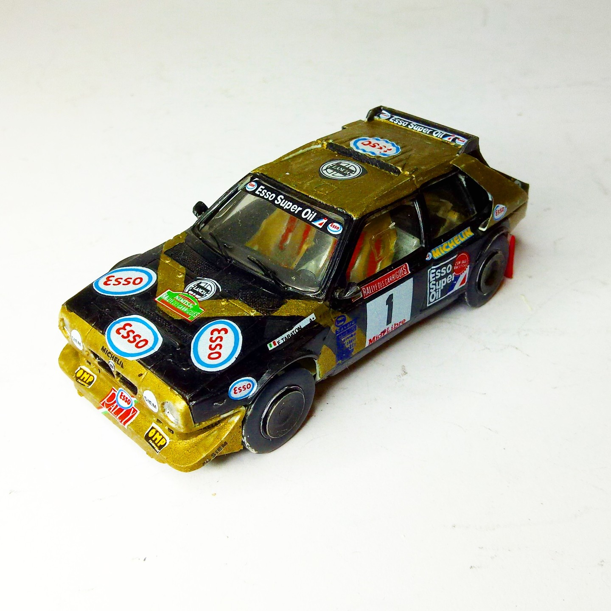
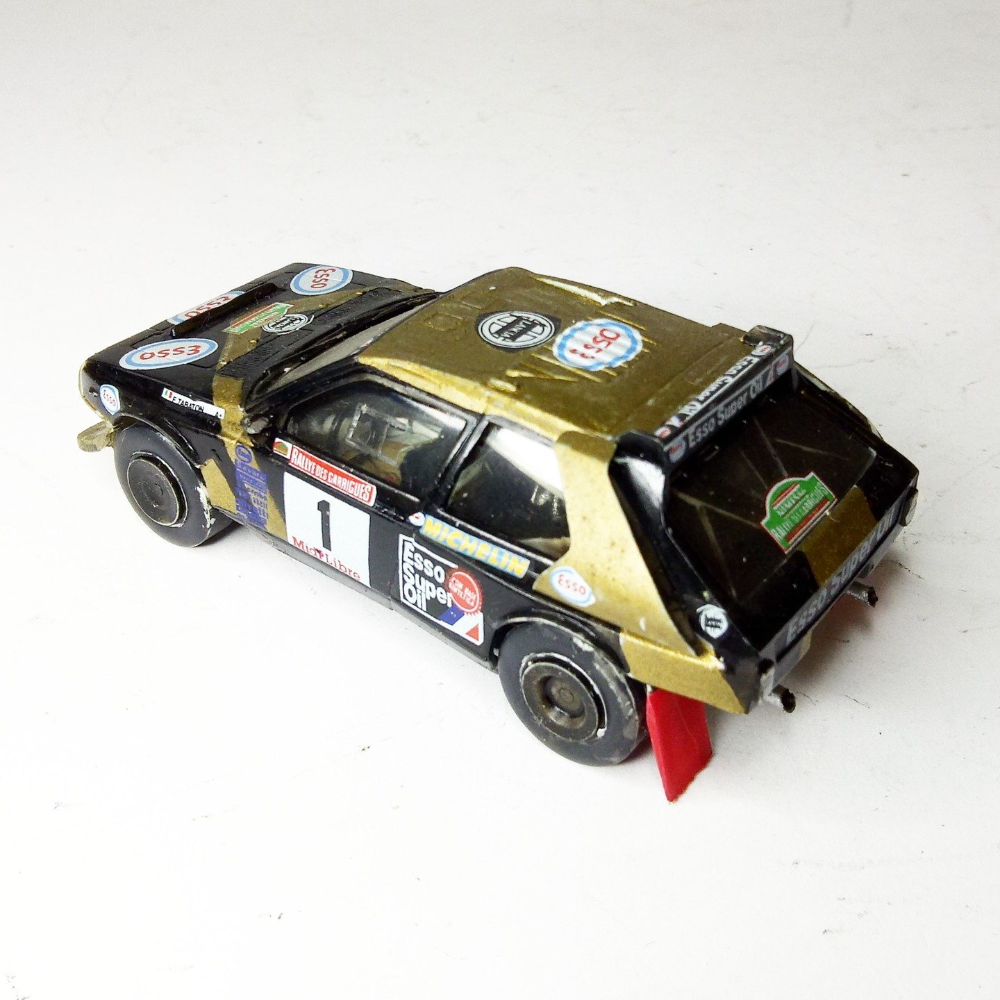

Auto e veicoli stradali · scale model archive
Lancia Delta S4
Lancia Delta S4 — Kit: Heller, Scale: 1/43. Rallye des Garrigues Midi Libre Nimes 1986 #1/43 #Heller #Lancia #DeltaS4

Photo gallery

English description
Rallye des Garrigues Midi Libre Nimes 1986
#1/43 #Heller #Lancia #DeltaS4
Descrizione italiana
Rallye des Garrigues Midi Libre Nimes 1986.